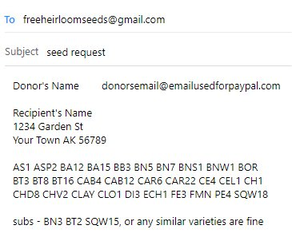

www.FreeHeirloomSeeds.org
Distributing FREE Heirloom Seeds to the public.
"Encouraging Sustainability, Self Reliance & Species Preservation"
Your donations & support make this possible!
NOTE: Refresh your browser before finalizing your selections!!
Our list changes often & you may not get what you ask for if you request from an outdated list.
LIST SUBS!!! We have a lot of pending requests & unique items could be out of stock unexpectedly
We do not send request confirmations!
Please allow up to 4 weeks for delivery during this, our busiest time of the year
Requests without donations ship in March.
- ANYONE CAN GET FREE SEEDS, BUT PLEASE
FOR YOUR POSTAGE IF YOU ARE ABLE -
Directions To Request Seeds
Here is a quick summary of our request instructions, but please do not request until you have read our rules & full request guidelines, which can be found HERE, below our Free Seed List.
This page best viewed on a full sized screen.
Be sure to list subs as we are short stocked on certain seeds right now!!
It's Easy! With or without donation -
With Donation
With Donation - Simply email us your donor info, shipping address & the item codes of the seeds you would like, in the format described below.
If you are requesting seeds to be sent outside of the USCLICK HERE.
- Subject line of the email should say "seed request"
- First line of email is the name & email used when you made your donation & the amount of the donation
- Next 3 lines, type name & address of recipient just as you would write it on an envelope.
- Next lines are seed codes, listed alphabetically, 10 per line.
- Type ten codes & then press "enter" or "return" one time to start a new line, type 10 more codes, press enter, etc..
- Type codes only, (no # or ,) single space between, like a sentence & press enter 1 time after every 10 items
- No matter how it looks on your screen, type 10 codes & press"enter" then type the next 10 codes.
- No extra text! CODES ONLY! no plant names, variety names, punctuation, just the 10 codes per line with a single space between each code.
- List subs after your primary list, just in case we run out of something.
- A photo example of what your request should look like & full instructions are located below the seed list HERE.
- Our current suggested minimum donation is $10 for every 15 packs of seeds shipped within the US. $20/30 packs, $30/45 packs, $40/60 packs, etc..
- Parcels of 15@$10 is break even or a loss for the organization parcels of 30 packs or more that meet our suggested donation, provide us some actual support to sustain & expand the project because we save on shipping & time
- Please do not send multiple requests with $10 donations, combine your requests, 30 packs for $20, 45/$30, etc..
- Please help us keep this service alive! We can send you as many seeds as you would like, as many times as you would like as long as our suggested donation is met.
- Keep in mind, we may not have the resources to fill requests that do not meet our suggested donation.
- If you need to update or correct your request, do so by replying to the original request in your "sent" folder, otherwise the first request will not be updated.
- You can also request with donation by mail or in person (instructions below the seed list)
Without Donation
Without Donation - If you cannot afford to meet our suggested donation, simply email us your shipping address & the item codes of the seeds you would like from our list, in the format described below.
- Be sure to put "no donation" in the email subject line
- Include your shipping address & list your item codes alphabetically.
- We absolutely do not fill requests without donation unless they say "no donation" in the email subject line.
- We absolutely do not fill requests without donation unless they say "no donation" in the email subject line.
- We absolutely do not fill requests without donation unless they say "no donation" in the email subject line.
- If you are requesting seeds for a project , institution, event, etc.. You must also submit a request that says "no donation" in the subject line & request must be complete with a shipping address to be considered.
- List the codes of 8 primary choices in alphabetical order, followed by 8 or more substitutes.
- Your request will be more likely to get filled if you choose seeds that are not on our oversized list.
- Your request is more likely to get filled if you request multiple items! Requests for a single pack of seeds does not always warrant our costs of $2+ per envelope to ship.
- Please keep in mind we have very little resources to provide postage for these seeds & donate if you can.
- If your request without a donation is incomplete it will be discarded!
- Email subject line - "No Donation", Seed selections from our list & a shipping address or you will not get seeds!!!
- We may not fill your request if you make more than one request without donation per year.
- Your request without a donation will be delayed or deleted if you email us to ask for confirmation, we have very little time to donate each requestor & if we are required to email you or check your request more than once you will have used the time we budgeted for your request.
- Please read our rules below the seed list so you get seeds & we can keep doing this.HERE
Seed request guidelines (1-14) followed by request instructions
You may not get seeds if you do not follow our seed request guidelines
You must read & follow all of the rules, & place your request properly.
By requesting seeds from this site you agree that the seeds are for your own personal use & you will do everything in your power to plant & care for them in the next possible planting season.
In order to keep this program sustainable, please, only one request without donation, or that does not meet our suggested minimum donation, per address, per year & REQUESTS MUST BE MADE BY THE RECIPIENT.
Failure to comply may result in your request being delayed, deleted or blocked. We have resources to fill & will happily accept unlimited parcel requests, when accompanied with our suggested minimum donation of $10 per every 15 packs of seed, shipped in the US.
We may not have the resources to fill parcel requests that do not meet our suggested minimum donation.
We will not give you multiple packs of any one variety of seed.
This gives a chance for as many people as possible to grow & save rare seeds.
You MUST include your address & seed selections when you request seeds.
Your address must be complete, including zip code. Please write it exactly as you would on an envelope.
You must select the seeds you want to grow from our list & provide us with the item code only, IN ALPHABETICAL ORDER!!
NEVER copy & paste the entire seed description!!!
You must list substitutes, our list changes often & we will not email to ask for subs.
We are happy to sub with the next closest vegetable if you instruct us to do so, but this may not be possible for more rare items so please list subs to ensure you get all the seeds you are expecting.
Your request must be properly formatted.
We provide an image example of how your request should look in the instructions, just below these rules.
If you need to update or correct your request, do so by replying to the original request in your "sent" folder, otherwise the first request will not be updated.
Do not email about requests unless you paid for postage & have not received seeds within 3 weeks.
We have limited volunteer resources to answer emails & fill seed requests. Help keep this program alive by following our instructions & being patient.
Seed requests are for seed requests only.
If you have additional questions or would like to get involved, please send a separate email & we will respond when we can.
If you donated & made a request the same time as you made a request without a donation we will delete your request without a donation.
Requests without donations are prioritzed to those that cannot afford our suggested donation. If we had the resources to provide additional packs of seed with our suggested donation then we would set it at $10 for 20 packs or more. Unfortunately costs for us are rising, but, thankfully, we have been able to keep our suggested donation the same for the last few years.
If you donated & did not follow our request instructions please expect at least one less pack, mispicks or other inconsistencies. Our request instructions exist for a reason & not following them will reduce or even eliminate our ability to fill your request.
3 Ways to get free seeds - ~1. Request Online ~2. Request By Mail ~3. Pick up in person
Request Method #1 - Online
With Donation
First - Donate online for postage & packaging Our suggested minimum donation for requests in the US is $10 for every 15 packs of seed you select.
$20/30 packs, 30/45 packs, etc.. You can get as many as you like but please no multiples of any one item
THEN - Send us an email formatted like our example below to FreeHeirloomSeeds@gmail.com
- Subject line of email is "Seed Request"
- First line of email is the email & name you used to make your donation (this is not part of the mailing address, write it seperately)
- Next 3 lines is your recipient name & address, typed exactly how you write it on an envelope
- Next line(s), seed selection codes, all in one alphabetical list. 10 item codes per row, with no additional text & a single space between each code type just the code letter/number, 1 space between each code press enter after every 10 codes to make a paragraph of lines with 10 codes in each line, no text or punctuation(# or,)
- After your primary list, start a new list for substitutes in case an item you requested is out of stock. You may also say "anything similar is fine" & if there is a variety available from the same family, we will choose a sub for you
- We do not send email confirmation, average shipping time is 2-5 days if you donated & haven't received seeds within 3 weeks you need to email us
Without Donation -
- Simply email us your shipping address & the item codes of the seeds you would like to FreeHeirloomSeeds@gmail.com
- We absolutely will not send seeds without a donation unless the email subject line says "no donation"
- Be sure to put "no donation" in the email subject line or you won't get seeds & list your item codes alphabetically.
- List 8 primary choices followed by up to 8 or more substitutes.
- Your request will be more likely to get filled if you choose seeds that are not on our oversized.
- There is no timeline for requests without postage, we fill them in bulk when we have the resources.
- Most requests without a donation that we receive between December & February are filled in March.
Your request should be formatted exactly like the request in the image below
REQUEST METHOD #2 - Request Seeds by mail
Just send us your seed selections, your shipping address & donation, if you are making one. (WE PROVIDE THE ENVELOPE) to:
Free Seeds c/o Stone Spirits
865B - 8th St.
Arcata, CA 95521
If you are sending a donation, please make checks payable to - Free Heirloom Seeds
- Don't forget to include your shipping address!
- Check our seed list & let us know the item code of the seeds you want to grow! (remember, we may not send you oversized seeds if we do not have funds to pay the shipping)
- Please list several extra items you are interested in case we are out what you are looking for.
REQUEST METHOD #3 - Pick up your Free Heirloom Seeds in person
We are currently distributing seeds at:
Stone Spirits
865#B - 8th Street
Arcata, CA 95521
The hours there are 12P - 5PM PST (GMT-7/8), Monday through Saturday
More distribution locations coming very soon!
!! Pro Tips !!
BE SURE YOU GET YOUR SEEDS
You must email us after you donate!!
Be sure to include your shipping address in your email!!
Even if you donated, paypal does not furnish us with your address.
We cannot send seeds if we do not have an address.
If your address is not correct & complete USPS will return your seeds to us.
Incomplete orders may be delayed or unshippable.
GET SEEDS YOU WILL GROW
If you request online or by mail, include some backup varieties in case we are out of something. We want to send you seeds you will use, so please choose from the list. At times, we have hundreds of different vairieties of seed available & they are not all for everyone. You must choose seeds from our list!! Orders without seeds selected tell us these seeds & this service is being taken for granted.
PLEASE HELP US SAVE TIME SO WE CAN SHIP SEEDS FASTER!!!
- Please just give us the item code, in alphabetical order when making requests.
- Please don't copy & paste the whole description, we have to read through the list & sometimes we have to read it 3 or 4 times to see if we missed something in the paragraphs of descriptions, which wastes our time & threatens the sustainability of this program.
- Requests that are not in alphabetical order are very dificult to fill & should expect some mispicks.
- Please help us get these seeds out faster by following our request template.
- Putting seed codes in rows of 10 really matters to us!! We expand the screen & walk across the room to select seeds for you.
- If seeds are not in rows of 10 we have to walk back to the screen & scroll, sometimes multiple times to fill a request.
- Please show some kindness for our seed packers & list your codes in rows of 10.
- Please send us a complete address, including zip code.
- Email should include the name you used in your paypal account if you made a donation to avoid confusion & help us prioritize your request.
- PLEASE TRY TO SEND YOUR ADDRESS WITH SEED REQUEST! WE CANNOT SHIP INCOMPLETE REQUESTS.